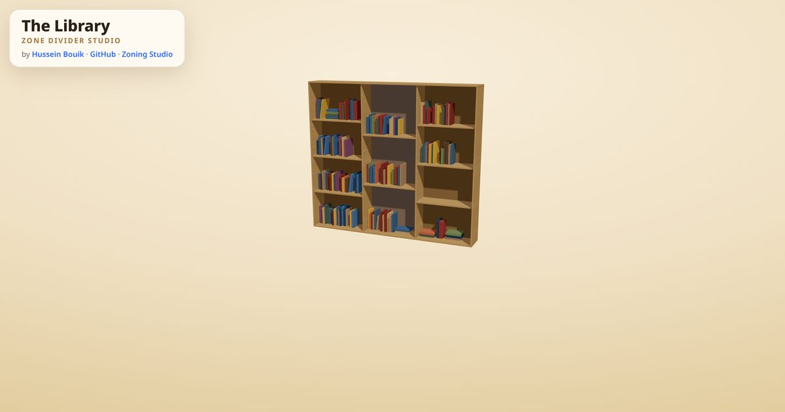
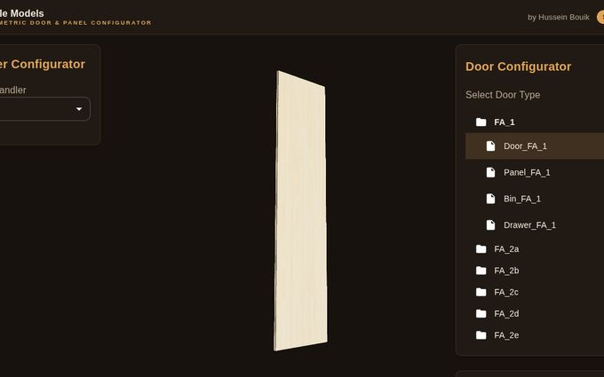
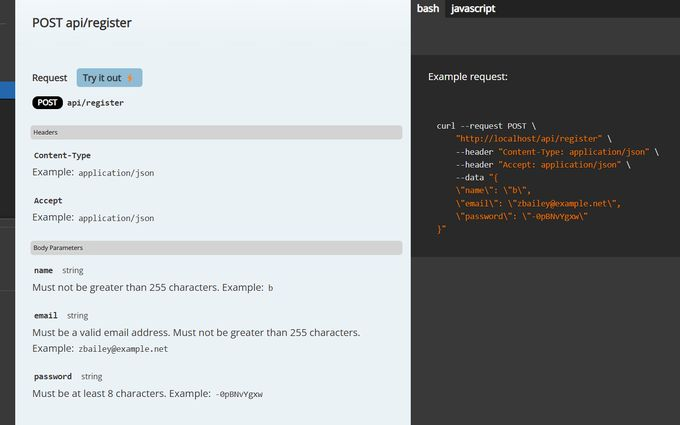
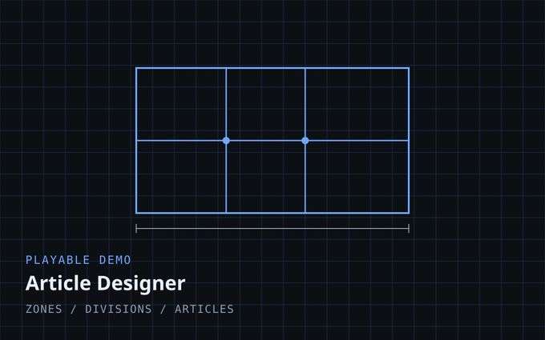
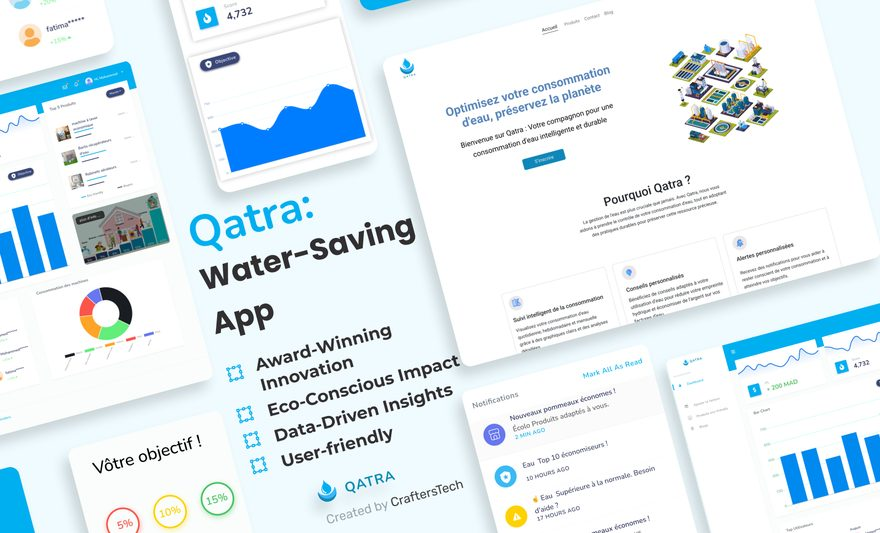
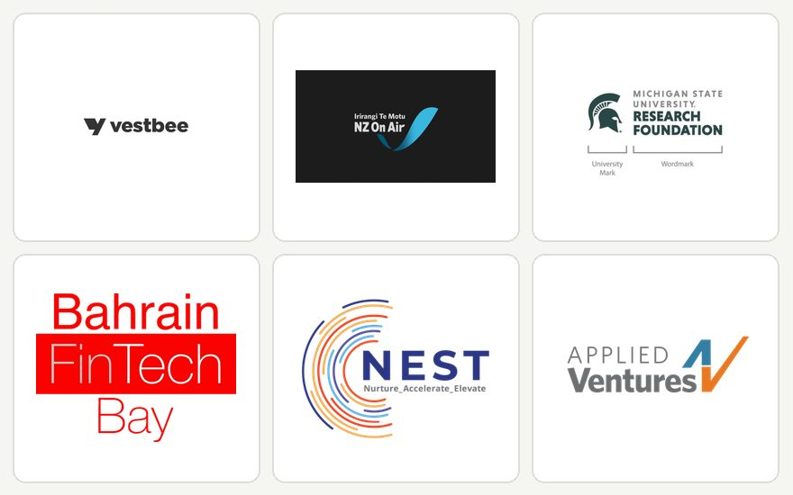
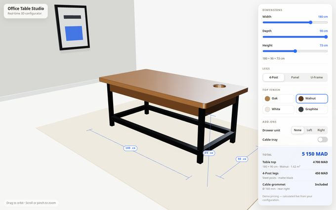
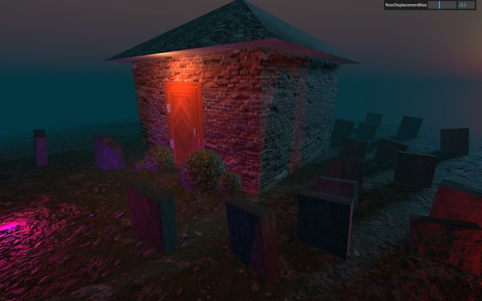

Zoning Studio ↗
Interactive 3D partition & cabinet configurator driven by my own linear-division engine — real-time, parametric and scalable.
I build reliable, scalable web applications and enterprise solutions with .NET and Azure, and create interactive 3D product configurators with real-time rendering and custom engines.

Interactive 3D partition & cabinet configurator driven by my own linear-division engine — real-time, parametric and scalable.

Same engine, second product — a real-time 3D bookcase configurator powered by the same linear-division engine as Zoning Studio, with classical shelf editing plus one-tap linear division.
UN Volunteers Platform (UVP) — enterprise .NET microservices on Azure for the UN’s global volunteering platform. As a software engineer at NTT DATA, I build AI-integration features and core product functionality, working across backend, frontend, and SQL.
The headline result: I cut the recruiter candidate export for ~400 records from 2+ hours to under 30 minutes — one bulk AI request replaced ~400 individual per-candidate calls, background jobs complete the export once the summaries land, and a graceful fallback still delivers the file, with an email notification, if the AI service stalls.
At WINS I worked full-stack on WinHub, a business and accounting platform. Its flagship feature is an AI-powered bank-statement import that replaced manual transaction data entry: Azure + LlamaIndex parse PDF statements into a 12-month view with per-month opening and closing balances, guarded by a balance-continuity validation layer — each month’s opening must equal the prior month’s closing — with a human review step for unclear items. I also built bulk conversion of orders into sales and purchase invoices.
At Tecnibo, a manufacturer of made-to-measure wooden articles, I built the front-end tooling for Oaksome, its 3D product configurator: a typed-tree structure editor with drag-and-drop and search, and the configurator back office — configurators, items, attributes and translations — alongside performance work on the configurator itself.
A Scanner tokenises the division formula → a Parser builds an AST of sections and expressions → an Evaluator resolves each section to an absolute mm value or a ratio weight → a Calculator subtracts divider thickness and absolute sections from the total length, then distributes the remainder across the ratio sections.
The engine returns clear openings, so sum(zones) + (zones − 1) × thickness = total length — exactly, on every run.
The Scanner suite passes completely, and the demos ship only the formula features the current engine computes correctly — ratios and absolute mm sections, nested per column. Every preset in the apps was verified against the engine.
The library is a work-in-progress refactor: 48 of 70 upstream engine tests currently fail (repetition groups, spreads and binary-expression sections, edge-reference ordering). The demos ship a verified subset; the full suite is in active refactor, with the complete status disclosed in the repo.







I contribute to the development and improvement of the UVP, working across backend, frontend, and SQL, with Azure, Hangfire, Redis and AppInsights.
.NET · C# · CQRS · Microservices
API Design · Clean Code
React · TypeScript · R3F
3D Configurators · UI/UX
Azure · CI/CD · Docker · Redis
Hangfire · AppInsights
Git · SQL · Testing · Code Quality
Agile · Problem Solving
Foundations · PHP — where the journey started.
Web Development Intern — web development for international clients.
Full-stack .NET development.
3D Configurators — advanced Three.js product configurators.
Enterprise .NET/React microservices on Azure for the UN Volunteers Platform — AI-integration features; recruiter export cut from 2h+ to <30 min.
I’m a software engineer based in Tangier with 3+ years of experience across enterprise platforms and 3D product configurators. At NTT DATA I build .NET microservices and React front ends for the UN Volunteers Platform; before that, I built advanced Three.js configurators for made-to-measure wood products at Tecnibo and full-stack .NET software at WINS. I integrate AI services into products where they genuinely help. My focus: clean architecture, measurable impact, and interfaces people enjoy using.
Open to opportunities in .NET, cloud, and product engineering.